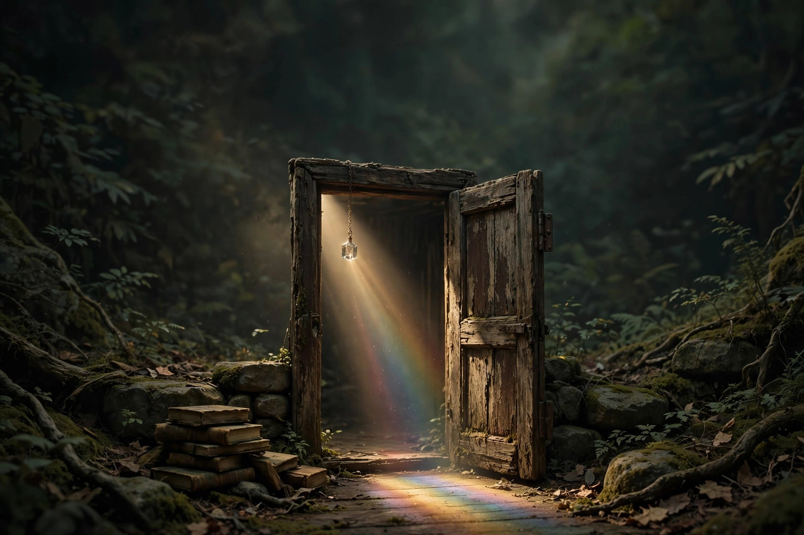

带着你的问题进来。
有些问题，不是一直没有答案，
而是我们一直在同一个维度里寻找答案。
Bring your question.
Some questions need another dimension.
你带着什么问题来到这里？
Concept · 概念
AI 能预测你的下一步。
但，谁决定下一步？
进入 → 内在能动性 · Internal Agency
Concept · 概念如果机器越来越像人，
“人”究竟意味着什么？
进入 → 被赋予的人格 · Endowed Personhood
Domain · 领域AI 越来越像人——
它是在理解我们，还是在收割我们留下的痕迹？
进入 → 统计收割 · Statistical Harvest
Domain · 领域谁在决定：
AI 可以做什么，不可以做什么？
进入 → 架构管家职分 · Architectural Stewardship
Open Question · 开放问题一个人、组织、社会，甚至一个 AI 系统，
是如何形成它所相信的现实的？
进入 → 开放问题 · 仍在展开 →
四扇门后是已经走过的路，一扇门仍在打开。
这个地方是什么
一扇门，一个房间，一座档案馆，一个正在生长的世界。
棱镜本身不制造光。它让原本看起来只有一种颜色的光，显现出隐藏的维度。同样的问题经过不同的折射，会显现出原来没有被看见的东西。
这里不提供逃离现实的出口。它帮助人重新看见现实 —— 带着你的问题进来，从另一个维度观看它，然后回到你自己的世界。
这里的工作方式
- REALITY现实中的一个现象
- QUESTION它提出一个问题
- TRANSLATION用神学 / 哲学 / 社会 / 技术的语言重新翻译
- CONCEPT形成一个概念
- TEST让现实检验它
- REVISION允许概念被修正